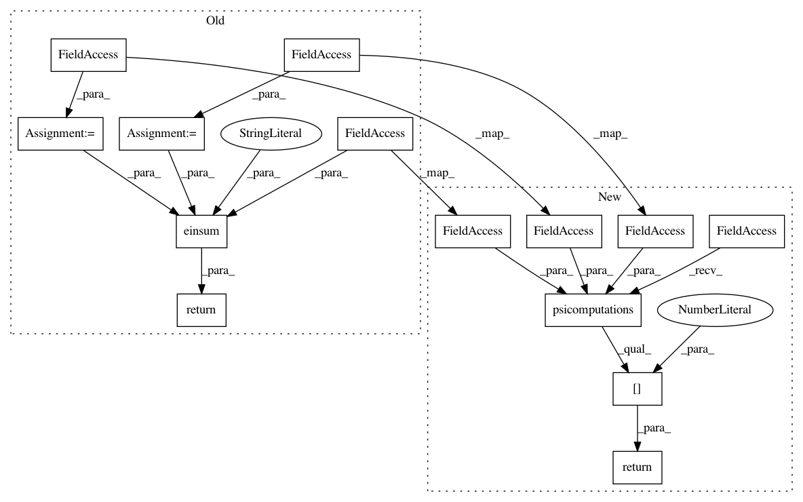

dad476faf6c1b03d9e940edb65cdcee9b6a36e2c,GPy/kern/_src/linear.py,Linear,psi0,#Linear#Any#Any#,108
Before Change
def psi0(self, Z, variational_posterior):
if isinstance(variational_posterior, variational.SpikeAndSlabPosterior):
gamma = variational_posterior.binary_prob
mu = variational_posterior.mean
S = variational_posterior.variance
return np.einsum("q,nq,nq->n",self.variances,gamma,np.square(mu)+S)
// return (self.variances*gamma*(np.square(mu)+S)).sum(axis=1)
else:
return np.sum(self.variances * self._mu2S(variational_posterior), 1)
After Change
def psi0(self, Z, variational_posterior):
if isinstance(variational_posterior, variational.SpikeAndSlabPosterior):
return self.psicomp.psicomputations(self.variances, Z, variational_posterior.mean, variational_posterior.variance, variational_posterior.binary_prob)[0]
else:
return np.sum(self.variances * self._mu2S(variational_posterior), 1)
def psi1(self, Z, variational_posterior):
In pattern: SUPERPATTERN
Frequency: 3
Non-data size: 14
Instances
Project Name: SheffieldML/GPy
Commit Name: dad476faf6c1b03d9e940edb65cdcee9b6a36e2c
Time: 2014-05-15
Author: z.dai@shef.ac.uk
File Name: GPy/kern/_src/linear.py
Class Name: Linear
Method Name: psi0
Project Name: SheffieldML/GPy
Commit Name: dad476faf6c1b03d9e940edb65cdcee9b6a36e2c
Time: 2014-05-15
Author: z.dai@shef.ac.uk
File Name: GPy/kern/_src/linear.py
Class Name: Linear
Method Name: psi2
Project Name: SheffieldML/GPy
Commit Name: dad476faf6c1b03d9e940edb65cdcee9b6a36e2c
Time: 2014-05-15
Author: z.dai@shef.ac.uk
File Name: GPy/kern/_src/linear.py
Class Name: Linear
Method Name: psi1